Learning to understand git
Understanding version control and Git was not easy to learn for me. It took me longer than it should have. Thankfully I was fortunate to have several people willing to help and explain everything to me. The problem was me. I couldn't relate what I was told to anything I already understood. That made it relaly difficult to make progress. I understood the words that were used as part of the explanation but missed the underlying meaning. I was pointed towards git documentation and started reading. Again I read the words but missed the meaning. Despite lack of progress and frustration I continued on, this time searching out tutorials.
One that really helped had a visual component. The breadcrumbing introduction it had along with seeing HEAD move as a commit occured made everything very understandable. After completing the tutorial I created a throwaway repository to test and further my understanding. It was at this point that a lot of what I read previously and read started to make sense.
Initializing the throwaway-learning repo
I created a new directory, started Git Bash on that directory, then ran git init to initialize or start the repo.
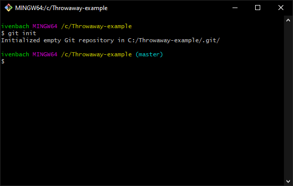
Adding files
Next I added text files manually to the directory. I confirmed that these were seen with git status to display the changes made.
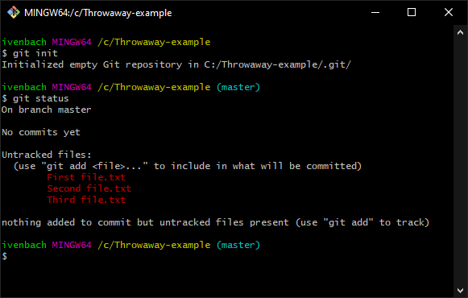 FileName.txt`" />
Then, as I did previously in the tutorials, I used the add command via git add to add the files to the index git add First\ file.txt.
***Note - Autocompletion: If you type git add Fir| leaving the cursor blinking at | you can autocomplete the file name with Tab.
***Note - Escape character: The \ (backslash) is an escape character for the character that follows it, the (space) character. Files with spaces in their names need the spaces to either be escaped in this manner or otherwise enclosed in quotes ' (single quote) or " (double quote). The following are also valid:
git add 'First file.txt'git add "First file.txt"
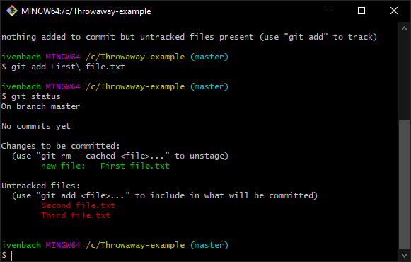
Adding files this way places them in the index, a preparation-area. It is a file of interest but isn't yet a part of the repo. Commonly called either staging-area or index, I use them interchangeably. The explicit git add step gives you the control to add only the files you want the repo.
Add the other files executing git add . where the . (period) indicates you want to add the new files. Relevant StackOverflow question for adding files.
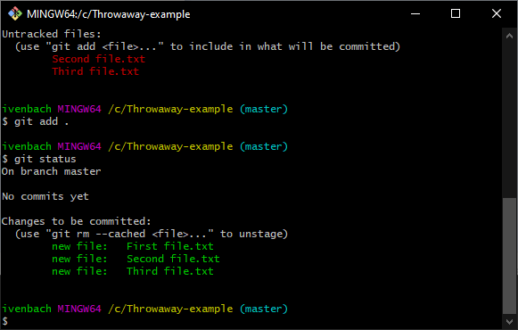
Committing to the repo
Now that the three files are in the staging area, add them to the repo via git commit. Execute git commit -m "Initial commit" where the -m is a flag/indicator that the following string "Initial commit" is the commit-message/descriptive-reason-it-was-added.
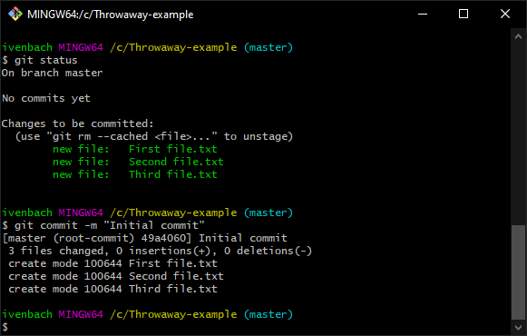
Detecting differences
¿Ok now what? Time to see at what git can do for you. Delete one of the files. Execute git status and you'll see that it has been deleted. The file committed to the repository so from this point on it is tracked. Any differences in it, even a single character, will be brought to your attention as a change.
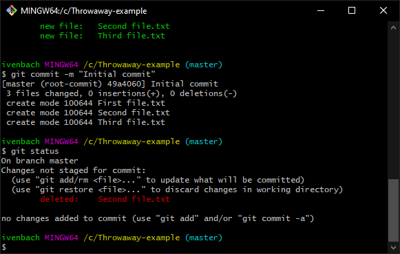
Restoring from the repo
Suggestion: Before continuing I suggest navigating to the directory you're working in to have it visible. Seeing the next command executed solidified the concept.
Because the file was committed to the repo you can restore it. Execute git restore with git restore Second\ file.txt to bring the file from the repo back into the directory.
Now that I saw this in action I continued by creating two new files and editting those already existing.
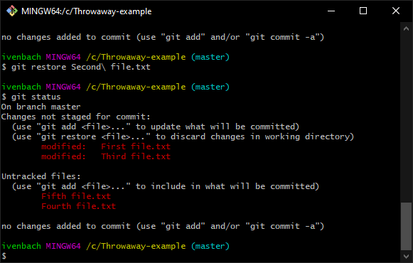
I restored one file with git restore First\ file.txt, and visually inspected it with a text editor confirming the changes weren't there. Executing git status confirmed no changes were detected. It was restored back to the same state as when it was added to the repo.
Once again I made edits to First file.txt and saved them. Running git status confirmed they were there. ¿What if I want to restore all the files? I executed git restore . followed by git status to see what changes were left. Naively I was a bit surprised to see files showing.
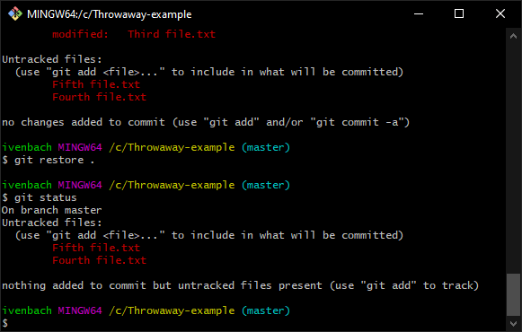
¿Why are those files there? They shouldn't be there... Wait. Maybe they should be. :click: that's when another git puzzle piece connected; I understood the different areas of git. "Working Directory" is just that, the directory-where-work-is-done. Mentally changing the text on the middle arrow to "Stage changes=git add" helped.

Another image, git-lifecycle, from the documentation made sense as well.

When a new file is first seen it is untracked. I checked back up at the previous commands and the new files were indeed "Untracked files". After git add the files were in the Staged/Staging-Area, designated as "Changes to be committed".
My question now was ¿how can I remove these files? I already knew I could delete them normally by right clicking and choosing delete, but this small taste of Command Line Interface (CLI) power had me hooked. I wanted more. I eventually found the command I wanted was git clean.
Since I wanted to remove both the remaining untracked files I executed git clean .. As before I watched the directory while I executed the command. Nothing happened. Confused, I then saw the output "fatal: clean.requireForce...".
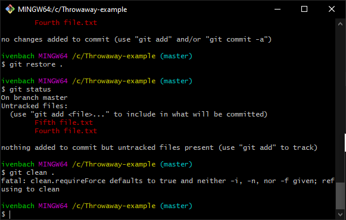
Reading the documentation -i was shorthand for --interactive "Show what would be done and clean files interactively". Going with that I executed git clean -i .
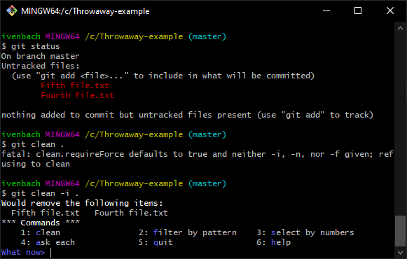
The documentation for interactive mode led me to executing option 1: clean.
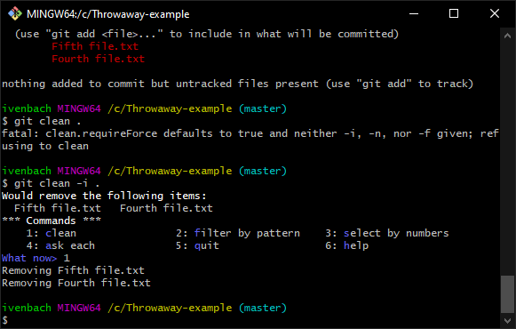
I forgot to watch the directory to see that they were removed but that didn't matter. At this point I knew I was on my way to learning to understand git.